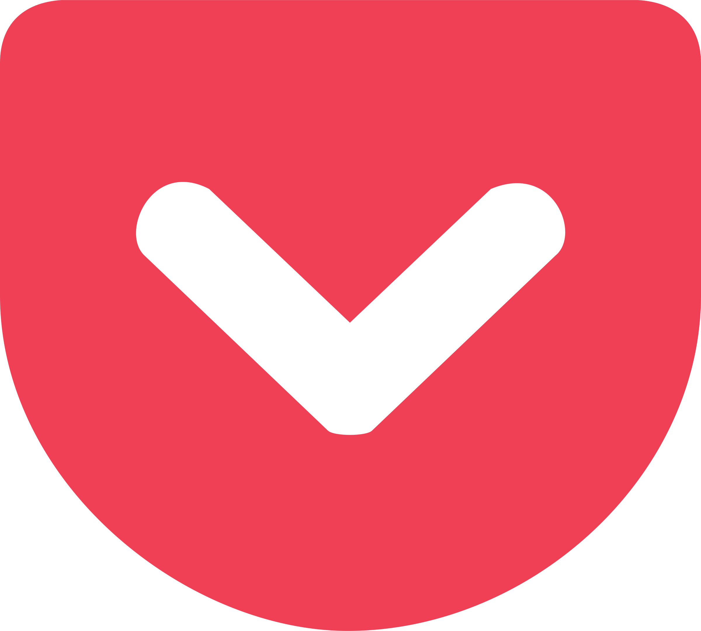

Sources de Veille Technologique

Feedly
Feedly est un agrégateur de flux RSS en ligne. Il vous permet de suivre vos sites Web et blogs préférés en un seul endroit. C'est un outil essentiel pour la veille technologique, car il vous permet de rester à jour avec les derniers articles et actualités de vos sources favorites.

Pocket est un service de sauvegarde en ligne qui vous permet d'enregistrer des articles, des vidéos et d'autres contenus intéressants pour une lecture ultérieure. C'est idéal pour la veille technologique, car vous pouvez sauvegarder des articles pertinents pour les consulter plus tard, même en mode hors ligne.